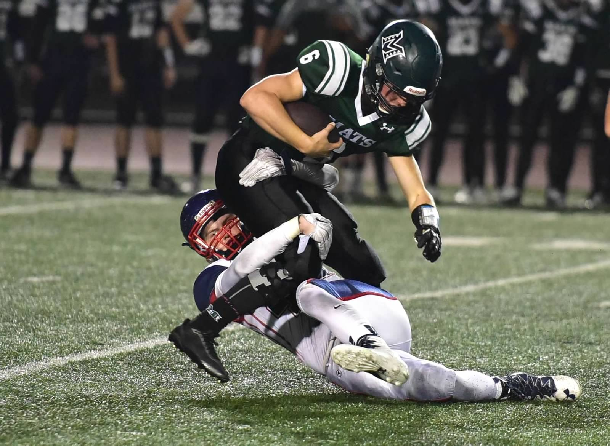
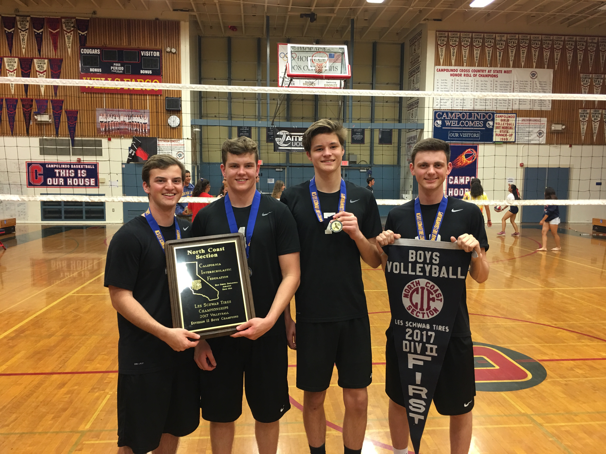

I come from a town in California called Moraga. I spent my entire childhood playing in the hills and enjoying the amazing California weather. I am the oldest brother in a family of six. Recently we took this photo together while on vacation!

While growing up I began to love watching and playing sports. My favorite sports to play were football, volleyball, and basketball. Here are some pictures of me playing in high school.
 I had a rather successful highschool football career. My team and I won a state championship and won four straight section titles while becoming the winningest public highschool in California state history. Below is a hype video of our senior season.
You can view my high school satistics here
- Education
- Brigham Young University, Global Supply Chain Major, 2018-Present
- Campolindo High School, 2014-2018
- California Scholarship Federation Award Recipient
- Work Experience
- BYU Audio/Visual, Media Services Specialist, 2019-Present
- Healthy Kiddos Intern, Project Manager/Team Lead, 2022
- Monument Court Self Storage, Head Landscaper, 2014-2018
- Skills
- Fluent in Spanish
- Software skills such as VBA,SQL,HTML, and Tableau
- Has worked in various leadership positions
Email: grant.larsen42@gmail.com
Instagram :@charlesgrant42